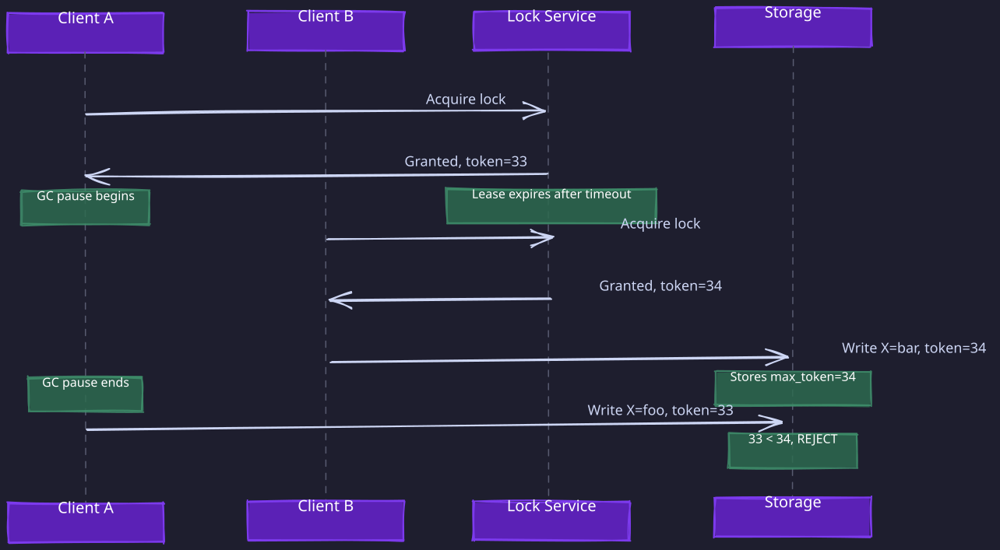
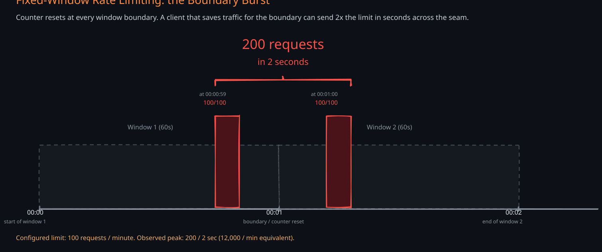
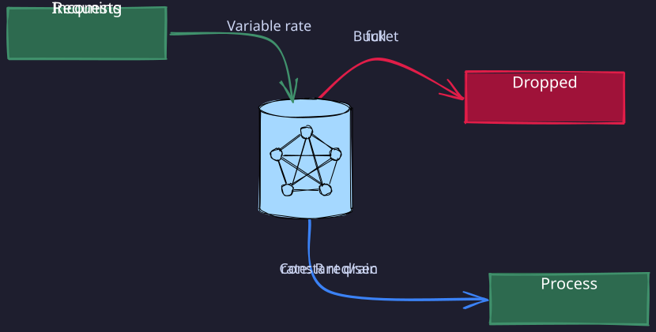
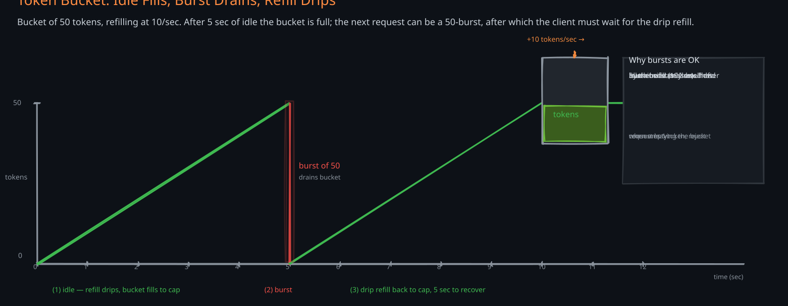
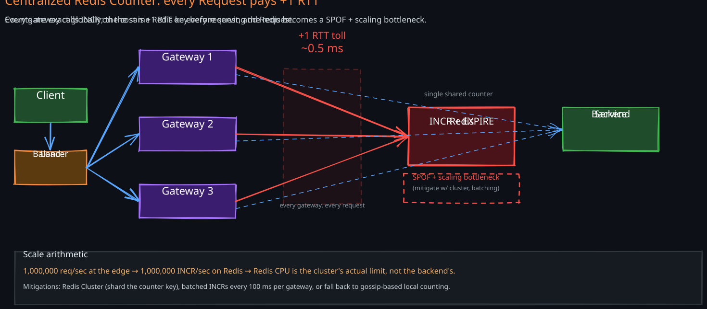
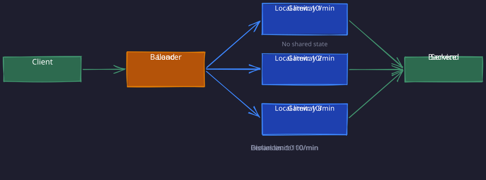
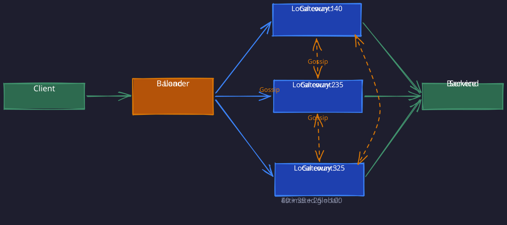

The Story
The Therac-25 radiation therapy machine killed six patients between 1985 and 1987 because of a race condition. The bug only triggered when an experienced operator typed fast enough to outrace the software’s state transitions — slower typists were safe. The machine’s interlock logic had a concurrency flaw: a counter overflow allowed the high-energy beam to fire without the spreading magnets in place. Faster typing literally increased the radiation dose. It remains the most deadly concurrency bug in history and the reason “mutual exclusion correctness” is not an academic exercise.
This note covers three foundational primitives that appear repeatedly in distributed system design: fencing tokens for mutual exclusion safety, monotonic reads for read consistency, and rate limiting for fairness and protection. Each solves a different class of problem, but they share a common theme — they are mechanisms that impose ordering or bounds on operations in a system where timing, failures, and concurrency make correctness difficult.
1. Fencing Tokens
1. The Problem: Process Pauses Break Distributed Locks
A distributed lock protects a shared resource so that only one client can access it at a time. The typical pattern is: acquire a lock with an expiration (a lease), do some work, then release it. This seems safe — but it is not, because of process pauses. A process can pause for an unbounded amount of time for reasons entirely outside the application’s control:
- Garbage collection (GC): A full GC in Java or Go can freeze a process for hundreds of milliseconds to several seconds. During a stop-the-world GC, the process cannot check whether its lease has expired.
- OS context switches and scheduling: The kernel can preempt a process and not reschedule it for an unpredictable duration, especially under CPU contention.
- Virtual machine suspension: In cloud environments, a VM can be live-migrated or paused by the hypervisor.
- Page faults and I/O waits: Swapping, network filesystem hangs, or slow disk I/O can stall a process.
The critical insight is that a process cannot know it has been paused. From its perspective, no time has passed. It resumes execution exactly where it left off, still believing it holds a valid lock — even though the lock expired minutes ago and another client now holds it.
2. Why Lease Expiration Alone Is Not Enough
Consider this scenario without fencing tokens:
- Client A acquires a lock with a 10-second lease.
- Client A begins writing to a shared storage service.
- Client A enters a long GC pause lasting 15 seconds.
- The lease expires after 10 seconds. Client A does not know this.
- Client B acquires the same lock. Client B writes to the shared storage.
- Client A resumes from its GC pause. It still believes it holds the lock and sends its write to storage.
- Storage accepts Client A’s write, overwriting Client B’s data.
Both clients acted correctly from their own perspective. The lock service correctly expired the lease. Yet the system violated mutual exclusion — two clients wrote to the same resource concurrently, and the older write clobbered the newer one. The fundamental problem is that the lock service and the storage service are separate systems. The lock service knows Client A’s lease expired, but the storage service has no way to verify whether the client sending a write still holds a valid lock.
3. The Solution: Monotonically Increasing Tokens
A fencing token is a monotonically increasing number issued by the lock service each time it grants a lock. Every lock acquisition returns a token that is strictly greater than all previously issued tokens. Clients must include this token with every request to the protected resource, and the resource must reject any request carrying a token lower than the highest token it has already seen.

Walk through this step by step:
- Client A acquires the lock and receives fencing token 33.
- Client A enters a long GC pause. Its lease expires.
- Client B acquires the lock and receives fencing token 34.
- Client B sends a write to storage with token 34. Storage processes it and records that the highest token it has seen is 34.
- Client A wakes up from its GC pause and sends a write with token 33.
- Storage sees that 33 < 34. The write is rejected.
The key property is that the resource itself enforces safety, not the lock service. Even though Client A genuinely believed it held the lock, the storage service independently verified the token and rejected the stale write. This is what makes fencing tokens robust against process pauses, network delays, and clock skew.
4. Implementation Requirements
For fencing tokens to work, two properties must hold:
- The lock service must issue strictly increasing tokens. Services like ZooKeeper naturally provide this through their totally ordered transaction IDs (zxid) and version numbers (cversion). Any consensus-based lock service that uses a log with sequential numbering can provide fencing tokens.
- The protected resource must actively check tokens. This is the part that is often overlooked. The storage service must track the highest token it has seen and reject any request with a lower token. This means the resource needs application-level logic to participate in the fencing protocol — it cannot be a black-box service that blindly accepts all writes.
5. Limitations
Fencing tokens protect against accidental violations of mutual exclusion caused by process pauses, network delays, or clock drift. They do not protect against a Byzantine node that deliberately fabricates a high token number to override legitimate writes. If a node is malicious or corrupted, it can claim any token value. Fencing tokens assume nodes are honest but may be slow or temporarily unavailable — the crash-recovery fault model, not the Byzantine fault model.
2. Monotonic Reads
1. The Problem: Time Going Backward
In a replicated system, different replicas may be at different points in the replication stream. If a client’s successive read requests are routed to different replicas, it can observe data moving backward in time. A user might see a new comment on a post, refresh the page, and see the comment disappear — because the second read was served by a replica that had not yet received the replication update.
This is disorienting and breaks user expectations even in eventually consistent systems. Monotonic reads is a consistency guarantee that prevents this specific anomaly: if a client has read a value at some point in time, subsequent reads by that client will never return an older value. It is stronger than eventual consistency but weaker than strong consistency. The closely related read-your-writes consistency guarantees a client sees its own writes — a stronger session-level property that implies monotonic reads for writes the client itself performed.
2. Implementation Approaches
There are several strategies to achieve monotonic reads, each with different tradeoffs in complexity, availability, and load distribution.
1. Sticky Sessions: Route Each User to the Same Replica
The simplest approach. A load balancer or routing layer hashes the user ID (or session ID) and consistently routes all reads from that user to the same replica. Since a single replica’s state only moves forward, the user will never see time go backward. Why it works: A single replica applies writes in order. Once a replica has applied write W, it will never un-apply it. So consecutive reads from the same replica are monotonically consistent by construction. Tradeoffs:
- If the assigned replica fails, the user must be rerouted to another replica that may be behind, temporarily breaking the guarantee.
- Uneven user activity can create hot replicas.
- Works well for read-heavy workloads where most users have low individual request rates.
2. Read-After-Write Window: Read from the Leader After Recent Writes
For a configurable window after a user’s most recent write (e.g., one minute), route that user’s reads to the leader. After the window expires, reads can go back to followers. Why it works: The leader always has the most up-to-date data. By reading from the leader shortly after a write, the user sees their own write immediately. After the window expires, replicas have likely caught up. Tradeoffs:
- Increases load on the leader, especially if many users are actively writing.
- The window duration is a guess — if replication lag exceeds the window, the guarantee breaks when the user switches back to followers.
- Simple to implement but requires tracking the last write timestamp per user.
3. Client-Tracked Timestamps: The Most Precise Approach
The client remembers the timestamp (or log sequence number) of its most recent write. On each read request, it sends this timestamp to the system. The system ensures the replica serving the read has applied all writes up to at least that timestamp. If the selected replica is not caught up, the system either routes the read to a different replica or waits until the replica catches up. Why it works: This provides an exact guarantee — the client will never see state older than its own last write. There is no guessing about time windows or lag thresholds. The system knows precisely how up-to-date the replica needs to be. Tradeoffs:
- Requires the client to maintain state (the timestamp) across requests, which adds complexity for cross-device scenarios where a user might write on one device and read on another.
- The timestamp can be a logical timestamp (log sequence number, ZooKeeper zxid) or a physical timestamp (wall clock time). Logical timestamps are preferable because they do not depend on clock synchronization across nodes.
- If using physical timestamps, clock skew between the client and server can cause the guarantee to be violated or reads to be unnecessarily delayed.
4. Lamport Clocks for Causal Ordering
A Lamport clock is a logical, monotonic counter maintained per process. Each event increments the counter, and messages carry the sender’s counter value. The receiver advances its counter to max(local, received) + 1. This creates a partial ordering of events that respects causality.
For monotonic reads, the mechanism works as follows:
- The client attaches the highest Lamport timestamp it has observed to each read request.
- The server ensures the response includes data from a state at least as recent as that timestamp. If the server’s local state is behind, it delays the response until it catches up.
Lamport clocks are particularly useful when:
- Physical clocks are unreliable or not synchronized.
- You need a lightweight ordering mechanism that does not require consensus.
- You want to enforce causal consistency (which implies monotonic reads) across a replicated system.
The limitation is that Lamport clocks only capture causal ordering. Two causally unrelated events may be ordered arbitrarily. For total ordering, you need a stronger mechanism like a consensus algorithm.
3. Rate Limiting
1. The Problem: Protecting Shared Resources
Any shared service — an API, a database, a message broker — has finite capacity. Without rate limiting, a single misbehaving client (or a coordinated attack) can consume all available resources, causing degradation or outages for everyone. Rate limiting controls how many requests a client can make in a given timeframe, enforcing fairness and protecting system stability.
For a full interview-level design with Redis Lua scripts, hierarchical rules, and failure handling, see 03-Rate-Limiter.
The challenge is choosing an algorithm that balances precision, memory cost, burst handling, and implementation complexity. There is no universally best algorithm — the right choice depends on the workload characteristics.
2. Fixed Window
Mechanism: Divide time into fixed-size windows (e.g., one-minute intervals starting at the top of each minute). Maintain a counter per client per window. Each request increments the counter. If the counter exceeds the limit, reject the request. When the window ends, the counter resets.

Implementation: Typically backed by a hash map or Redis key with an expiry. The key is user_id:window_start_timestamp, and the value is the counter. Redis INCR with EXPIRE makes this trivial.
Memory cost: O(1) per client — a single counter per active window.
Precision: Low. The boundary between windows creates a burst problem. A client can make 100 requests at 00:00:59 and another 100 at 00:01:00 — 200 requests in two seconds despite a limit of 100 per minute. This happens because the counter resets at the window boundary.
Burst handling: Poor. Allows 2x the intended rate at window boundaries.
When to use: Simple APIs where approximate rate limiting is acceptable and the boundary burst problem is tolerable.
3. Sliding Window Log
Mechanism: Instead of counting requests in a fixed window, maintain a sorted set of timestamps for each client’s recent requests. When a new request arrives, remove all entries older than the window size (e.g., older than 60 seconds ago), then check if the remaining count exceeds the limit.
Implementation: A Redis sorted set works well. Each request adds its timestamp to the set. Before checking the count, remove entries with scores older than now - window_size. The count of remaining entries is the request count for the sliding window.
Memory cost: O(N) per client, where N is the rate limit. If the limit is 1000 requests per minute, you store up to 1000 timestamps per client. This is significantly more expensive than fixed window.
Precision: High. There is no boundary problem. The window slides continuously, so a client cannot exploit edges.
Burst handling: Precise enforcement — a client can never exceed the limit in any rolling window of the configured duration. However, it does allow a burst of requests as long as the total within the window is under the limit.
When to use: When exact enforcement matters and the rate limit per client is low enough that the memory cost is acceptable (e.g., premium API tiers with low limits).
4. Sliding Window Counter (Hybrid)
Mechanism: A compromise between fixed window and sliding window log. Maintain counters for the current and previous fixed windows. Estimate the count for the sliding window using a weighted average:
estimated_count = (previous_window_count * overlap_fraction) + current_window_count
For example, if you are 30 seconds into the current 60-second window, the overlap with the previous window is 50%. If the previous window had 80 requests and the current window has 30 requests, the estimated count is 80 * 0.5 + 30 = 70.
Memory cost: O(1) per client — two counters (current and previous window).
Precision: Good but approximate. The estimate assumes requests in the previous window were uniformly distributed, which may not be true.
Burst handling: Much better than fixed window. The weighted average smooths out the boundary problem.
When to use: The most common choice in production. It combines the memory efficiency of fixed windows with much better precision. Used by services like Cloudflare and Stripe.
5. Leaky Bucket
Mechanism: Conceptually, requests enter a bucket (queue) and drain out at a constant rate. If the bucket is full when a new request arrives, the request is dropped. The drain rate determines the sustained throughput, and the bucket size determines the burst capacity.

Implementation: A FIFO queue with a fixed capacity. A worker (or timer) dequeues and processes requests at a fixed rate. Alternatively, it can be implemented without an explicit queue using a counter and timestamp: track the last drain time and the current water level, then compute the new level on each request.
Memory cost: O(bucket_size) if using an explicit queue. O(1) if using the counter-based implementation.
Precision: Excellent for enforcing a constant output rate. The system never exceeds the drain rate over any sustained period.
Burst handling: Absorbs bursts up to the bucket size, then smooths them out. Unlike token bucket, it does not allow bursts in the output — requests are always processed at the drain rate. Excess requests during a burst are queued and delayed (or dropped if the queue is full).
When to use: Network traffic shaping, where a smooth output rate matters more than processing requests as fast as possible. Also useful when downstream services have strict throughput limits.
6. Token Bucket
Mechanism: A bucket holds tokens, up to a maximum capacity. Tokens are added at a fixed refill rate. Each request consumes one token (or more, for weighted requests). If no tokens are available, the request is rejected or queued.

Implementation: Two values per client: the current token count and the last refill timestamp. On each request, compute how many tokens have been added since the last refill (elapsed_time * refill_rate), cap at the bucket maximum, then decrement by one. This is O(1) and requires no background thread for refilling.
Memory cost: O(1) per client — two numbers (token count and last refill time).
Precision: Good. The refill rate enforces a sustained average rate, while the bucket size controls how large a burst is permitted.
Burst handling: This is the key differentiator from leaky bucket. If a client has been idle and accumulated tokens, it can send a burst of requests up to the bucket capacity. This is desirable for many API use cases — allow occasional bursts while enforcing an average rate over time.
When to use: The most widely used algorithm for API rate limiting. AWS, Google Cloud, and most API gateway products use token bucket. It naturally models the way most clients interact with APIs — occasional bursts followed by idle periods.
7. Algorithm Comparison
| Algorithm | Memory per Client | Precision | Burst Handling | Complexity |
|---|---|---|---|---|
| Fixed Window | O(1) | Low — boundary bursts | Poor | Trivial |
| Sliding Window Log | O(N) | Exact | Controlled | Moderate |
| Sliding Window Counter | O(1) | Good — approximate | Good | Low |
| Leaky Bucket | O(1) | Excellent for output rate | Absorbs and smooths | Low |
| Token Bucket | O(1) | Good | Allows controlled bursts | Low |
8. Distributed Rate Limiting
In a real production environment, rate limiting runs across multiple API gateway instances behind a load balancer. This creates a fundamental challenge: each instance sees only a fraction of the client’s total traffic. If a client is limited to 100 requests per minute and there are 10 gateway instances, a naive per-instance limit of 10 per instance breaks if traffic is unevenly distributed. The client might send 95 requests to one instance and 5 to another, exceeding the intended limit on the first instance while remaining under the per-instance limit on the second.
There are three main approaches to solving this:
1. Centralized Counter with Redis
All gateway instances share a single counter in a centralized store like Redis. Each request increments the counter atomically (using INCR + EXPIRE or a Lua script for sliding window logic). This is the most common production approach.

Advantages: Exact global counting. Simple mental model. Redis is fast enough for most workloads (sub-millisecond latency for INCR).
Disadvantages: Redis becomes a single point of failure and a latency bottleneck. Every request adds one network round-trip to Redis. At very high throughput (millions of requests per second), Redis can become a bottleneck even with pipelining and clustering.
Mitigation: Use Redis Cluster for sharding across multiple Redis nodes. Use Redis Sentinel or a managed Redis service for high availability. For ultra-high throughput, batch increments — each gateway accumulates requests locally for a short interval (e.g., 100ms) and then sends a single batch increment to Redis.
2. Local Counting with Proportional Limits
Each gateway instance enforces a fraction of the global limit locally, without any shared state. If the global limit is 100 requests per minute and there are 10 instances, each instance allows 10 requests per minute.

Advantages: No shared state, no external dependency, no added latency. Extremely simple and fast.
Disadvantages: Assumes traffic is evenly distributed across instances. In practice, load balancing is never perfectly uniform. A client might consistently hash to the same instance, or some instances might receive more traffic due to network topology. The effective global limit can be anywhere from 10 (all traffic to one instance) to 100 (perfectly distributed), making it highly imprecise.
When to use: Only acceptable when approximate rate limiting is sufficient and the system has relatively uniform load balancing.
3. Local Counting with Gossip-Based Synchronization
Each gateway instance maintains a local counter and periodically shares its count with other instances using a gossip protocol. Each instance estimates the global count by summing its own count with the most recent counts received from peers.

Advantages: No centralized bottleneck. Tolerates the failure of individual instances. Lower latency than centralized counting because most requests are checked locally.
Disadvantages: The global count estimate is always slightly stale due to the gossip propagation delay. During burst traffic, the system may temporarily allow more requests than the global limit before the gossip converges. The convergence delay is proportional to the gossip interval and the number of instances.
When to use: Large-scale systems where centralized Redis is a bottleneck, and slightly exceeding the rate limit temporarily is acceptable. This approach trades precision for scalability.
9. Rate Limiting vs. Throttling
These terms are often confused but describe different mechanisms:
- Rate limiting enforces a hard cap on how many requests a client can make in a time window. It protects the system from abusive or misbehaving clients. When the cap is hit, excess requests are rejected immediately with a
429 Too Many Requestsresponse. The system does not attempt to process them later. - Throttling regulates the rate at which requests are processed to protect downstream services. It acts as a buffer — requests are queued and processed at a sustainable rate. If the queue overflows, excess requests are shed. The difference is that throttling introduces delay rather than immediate rejection. A service might accept 1000 requests per second from clients but only dispatch 10 per second to a downstream database, queuing the rest.
The key distinction: rate limiting is about rejection at the edge (protecting the system from clients), while throttling is about flow control within the system (protecting downstream services from upstream load). In practice, a well-designed system uses both — rate limiting at the API gateway to cap client requests, and throttling between internal services to prevent cascading failures.
Revision Summary
- Fencing tokens solve the problem of process pauses (GC, scheduling, VM suspension) breaking distributed lock safety. The lock service issues a monotonically increasing token with each lock grant. The protected resource rejects any request carrying a token lower than the highest it has seen. Safety is enforced by the resource, not the lock service.
- Monotonic reads prevent a client from seeing time go backward when reading from replicated systems. Implementation strategies range from simple sticky sessions (route to same replica) to precise client-tracked timestamps (client sends its last-seen log sequence number). The tradeoff is between simplicity, precision, and load distribution.
- Rate limiting algorithms vary along three axes: memory cost, precision, and burst handling. Fixed window is simplest but has boundary burst problems. Sliding window log is precise but memory-expensive. Token bucket is the most widely used because it allows controlled bursts while enforcing average rates. Leaky bucket enforces smooth output rates.
- Distributed rate limiting across multiple gateway instances requires either centralized counting (Redis — precise but adds latency and a SPOF), local proportional limits (simple but imprecise), or gossip-based synchronization (scalable but eventually consistent).
- Rate limiting vs. throttling: rate limiting rejects excess requests at the edge; throttling queues and delays requests to protect downstream services.
Deep Understanding Questions
-
A fencing token system uses a Redis-based lock with
SET key value NX PX 10000. If two clients experience near-simultaneous GC pauses of different durations, and both resume after the lock has been re-acquired by a third client, what determines which stale write (if any) is accepted? What if the storage service restarts and loses its record of the highest token? Ans: -
In the client-tracked timestamp approach to monotonic reads, a user writes on their phone and then immediately reads on their laptop. The laptop has no record of the phone’s write timestamp. How would you solve this cross-device monotonic read problem without always reading from the leader? Ans:
-
A sliding window counter estimates the request count using a weighted average of the current and previous window. Construct a specific traffic pattern where this estimate is significantly wrong (either too high or too low). What are the consequences of each direction of error? Ans:
-
You are running a token bucket rate limiter with a bucket size of 100 and a refill rate of 10 tokens/second. A client sends exactly 20 requests per second continuously. How does the bucket behave over time? At what point, if ever, does the client start getting rejected? Ans:
-
In the centralized Redis approach to distributed rate limiting, you use
INCRfollowed byEXPIRE. What race condition exists between these two commands? How does a Lua script orMULTI/EXECsolve it? What happens if Redis fails between theINCRandEXPIRE? Ans: -
A gossip-based distributed rate limiter has 50 gateway instances with a 500ms gossip interval. A client sends a burst of 10,000 requests in 100ms, evenly distributed across all instances. Each instance sees 200 requests. The global limit is 1,000 requests per minute. How many requests are likely to be accepted before the gossip converges and instances realize the global limit has been exceeded? Ans:
-
Your system uses sticky sessions for monotonic reads, hashing user IDs to replicas. A replica fails and its users are redistributed. Some users now see data that is older than what they previously read. Is this a violation of the monotonic reads guarantee? How would you prevent it? Ans:
-
Why can’t the leaky bucket algorithm be implemented by simply rate-limiting the token bucket to have a bucket size of 1? What behavioral difference would a client observe between a leaky bucket with drain rate R and queue size Q, versus a token bucket with refill rate R and bucket size Q? Ans:
-
A fencing token scheme requires the storage service to track the highest token seen. In a replicated storage system, different replicas may have seen different maximum tokens. How would you implement fencing token validation in a multi-replica storage system without introducing a single point of serialization? Ans:
-
You need to implement rate limiting for a multi-tenant API where some tenants have 100x more traffic than others. Fixed window with Redis works but the Redis instance is hitting CPU limits. What architectural changes would you make to scale the rate limiting layer without sacrificing precision for high-value tenants? Ans: